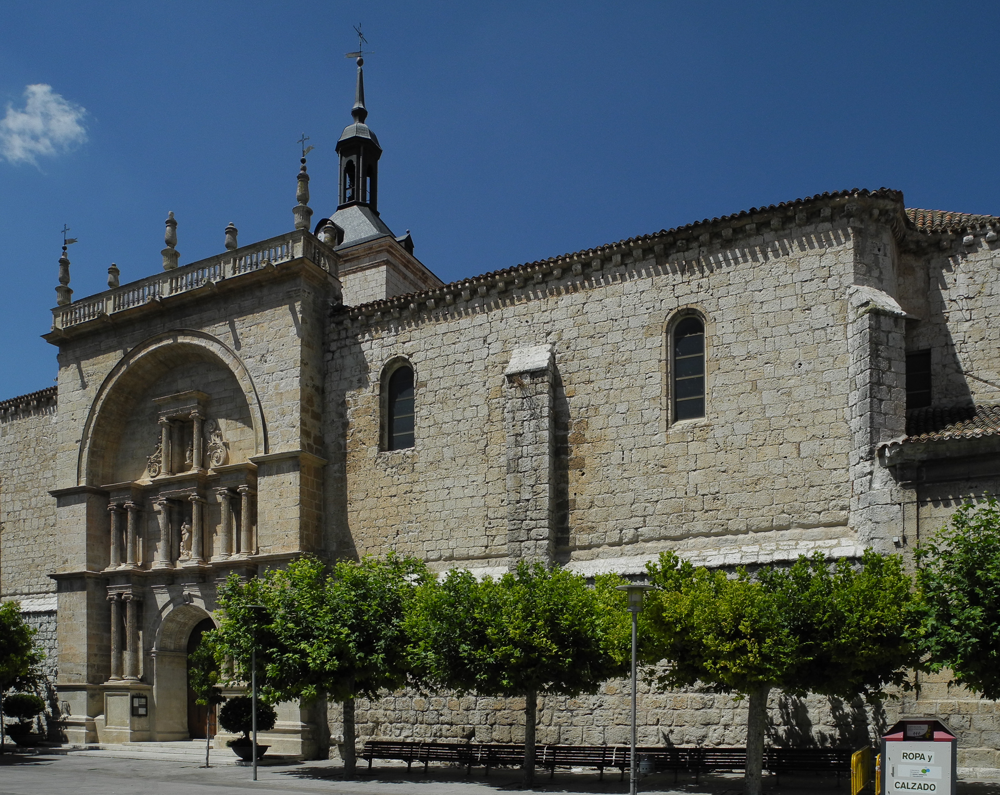

Tudela de Duero es un municipio situado en la provincia de Valladolid, en la comunidad autónoma de Castilla y León, España. Su historia se remonta a tiempos prehistóricos, con evidencias de asentamientos humanos desde la antigüedad. Durante la época romana, la zona estuvo habitada y se han encontrado restos arqueológicos que lo confirman. Tras la invasión musulmana, la región fue reconquistada por el reino de León en el siglo X, y se llevó a cabo su repoblación. Durante la Edad Media y Moderna, Tudela de Duero fue un centro agrícola y comercial importante, con la construcción de diversos edificios significativos. En el siglo XIX, experimentó un crecimiento económico y demográfico, destacando en la industria vinícola. En el siglo XX, sufrió los efectos de la Guerra Civil Española y la posterior dictadura franquista, pero también vivió un proceso de modernización. Hoy en día, Tudela de Duero es un municipio próspero que conserva su rico patrimonio histórico y cultural, siendo un centro agrícola y vinícola destacado en la región.
El tipo de clima predominante en Tudela de Duero, España, se clasifica como un clima mediterráneo continentalizado. Este tipo de clima se caracteriza por tener veranos calurosos y secos, e inviernos fríos. Aunque se encuentra en el interior de la península ibérica y no en la costa, hereda algunas características mediterráneas, como la sequedad estival y la moderación de las temperaturas invernales. En resumen, Tudela de Duero experimenta un clima continental con influencias mediterráneas.
Tudela de Duero es una encantadora localidad ubicada en la provincia de Valladolid, España, con una rica historia y diversas atracciones para visitar. Aquí tienes algunas zonas y lugares destacados para explorar en Tudela de Duero:
Estas son solo algunas sugerencias para visitar en Tudela de Duero. La ciudad y sus alrededores ofrecen mucho más para descubrir, desde su patrimonio cultural hasta sus paisajes naturales.
